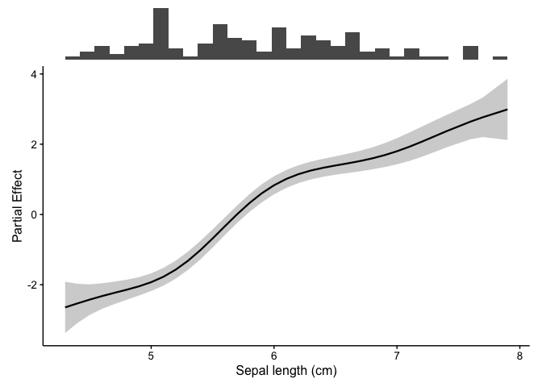
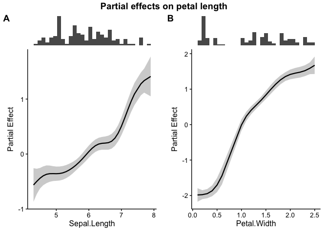
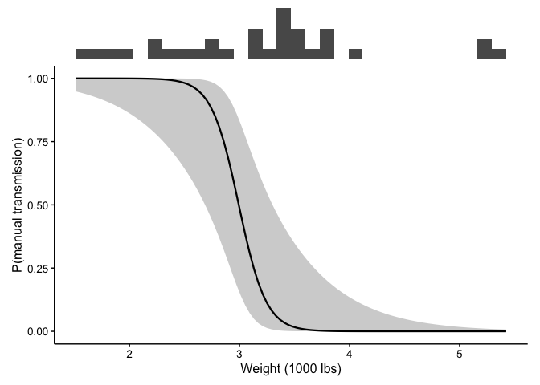
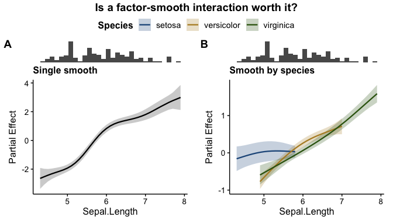
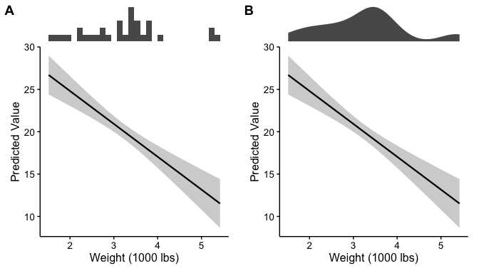
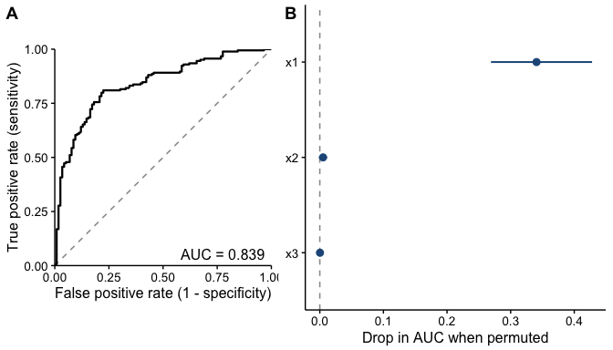
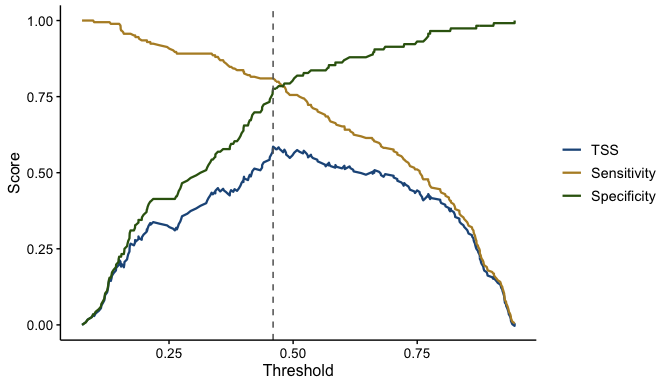
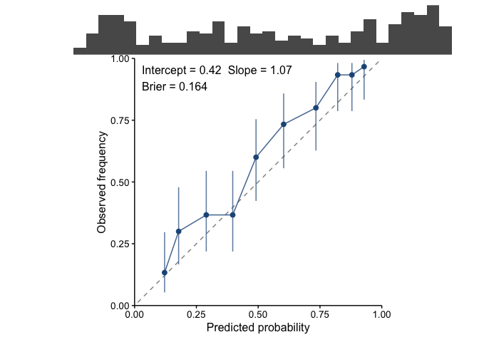
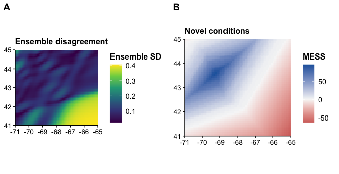

An effect curve on its own is easy to over-interpret. A model could draw a confident-looking bend at the far right of the x axis, and nothing in the plot would tell you that only three observations sit under it.
fancyfx pairs every effect curve with a rug of the raw data, drawn directly above it on a shared x axis, so the shape of the effect and the weight of evidence behind it get read together. Additionally, fancyfx returns manuscript ready figures without having to fiddle with settings. Defaults are chosen for publication rather than for exploration — a clean theme with no grid or background panel, lettered panel labels, and a categorical palette checked for legibility under colour vision deficiency — so a bare call gets you close to the figure you would submit. Every one of those is an argument, so a house style can replace any of them.
It works across model types: GAMs fitted with mgcv are shown as partial effects via gratia, and everything else — including mixed and Bayesian fits — as predictions via marginaleffects.
Alongside the effect plots are model evaluation plots — ROC/AUC, the TSS-versus-threshold trade-off, and permutation importance — which ask whether the model earns the effects it reports.
Which function do I want?
| I want to… | Use |
|---|---|
| plot one predictor’s effect | plotEffects() |
| plot several predictors | combinePlots() |
| compare competing models | comparePlots() |
| get the effect numbers, not a plot | effect_estimates() |
| draw a rug on its own | plotRugs() |
| evaluate a presence/absence model | |
| how well does it rank? | plotROC() |
| where should the cutoff go? | plotThreshold() |
| are the probabilities honest? | plotCalibration() |
| which predictors is it using? | plotImportance() |
| how much deviance is explained? | calc_deviance() |
| is my hold-out actually independent? | spatial_sorting_bias() |
| score predictions I already have (CV) | held_out() |
| spatial projections | |
| where does the ensemble disagree? | plotUncertainty() |
| where is it extrapolating? | plotExtrapolation() |
| aggregate to a defensible resolution |
plotHexbin() / hex_bin()
|
| thin records clustered by survey effort | thin_points() |
| do two distributions overlap? |
niche_overlap() / niche_equivalency()
|
| make it publication-ready | |
| change the theme or font sizes | theme_fancyfx() |
| change the curve colours | fancyfx_palette() |
Installation
You can install the development version of fancyfx from GitHub with:
# install.packages("devtools")
devtools::install_github("chross22/fancyfx")Example
library(fancyfx)
# A GAM, using the iris data set available in R
gam.fit <- mgcv::gam(Petal.Length ~ s(Sepal.Length), data = iris)
plotEffects(gam.fit, iris, "Sepal.Length", xlab = "Sepal length (cm)")
The histogram along the top is the point: where it is thin, be careful.
Several terms can be shown at once, each keeping its own rug:
gam.fit2 <- mgcv::gam(Petal.Length ~ s(Sepal.Length) + s(Petal.Width),
data = iris)
combinePlots(gam.fit2, iris, vars = c("Sepal.Length", "Petal.Width"),
title = "Partial effects on petal length")
Non-GAM models take exactly the same call. Here a logistic regression, on the scale of the outcome, with a 95% interval:
glm.fit <- glm(am ~ wt + hp, data = mtcars, family = binomial)
plotEffects(glm.fit, mtcars, "wt",
scale = "response", interval = "ci",
xlab = "Weight (1000 lbs)",
ylab = "P(manual transmission)")
Comparing models
comparePlots() holds the variable fixed and varies the model, which is how you check whether a modelling choice bought you anything. A factor-smooth interaction is drawn as one curve per level, with a colourblind-safe palette and a legend:
plain <- mgcv::gam(Petal.Length ~ s(Sepal.Length), data = iris)
by.species <- mgcv::gam(Petal.Length ~ s(Sepal.Length, by = Species) + Species,
data = iris)
comparePlots(list("Single smooth" = plain,
"Smooth by species" = by.species),
iris, "Sepal.Length",
title = "Is a factor-smooth interaction worth it?")
Rug styles
rug.type picks how the raw data is summarised above the curve. A histogram shows counts and reads well at moderate sample sizes; a density is smoother and works better when a histogram would be noisy.
lm.fit <- lm(mpg ~ wt + hp, data = mtcars)
ggpubr::ggarrange(
plotEffects(lm.fit, mtcars, "wt", rug.type = "histogram",
xlab = "Weight (1000 lbs)"),
plotEffects(lm.fit, mtcars, "wt", rug.type = "density",
xlab = "Weight (1000 lbs)"),
labels = c("A", "B")
)
Publication-ready by default
Plots use theme_fancyfx(), built on ggpubr::theme_pubr(): no background panel, no grid, plain axis lines, and text sized to survive being shrunk into a column. Panels are labelled A, B, C by default.
# Bigger text for a narrow figure — scales every element together
plotEffects(fit, dat, "x", theme = theme_fancyfx(base_size = 16))
# Or size each element on its own
plotEffects(fit, dat, "x",
theme = theme_fancyfx(base_size = 13,
axis.title.size = 18,
axis.text.size = 10,
legend.title.size = 15))
# Panel labels and the figure title are drawn by the arranging step,
# so they have their own arguments
combinePlots(fit, dat, vars, title = "...", label.size = 20, title.size = 18)
# Lower-case, numbered, none, or your own
combinePlots(fit, dat, vars, labels = "a")
combinePlots(fit, dat, vars, labels = "1")
combinePlots(fit, dat, vars, labels = "none")
combinePlots(fit, dat, vars, labels = c("Panel one", "Panel two"))
# Any other ggplot2 theme works too
plotEffects(fit, dat, "x", theme = ggplot2::theme_minimal())Curves that split by a factor use fancyfx_palette(), a six-colour categorical palette chosen by search rather than by eye: every colour sits in a mid lightness band, clears 3:1 contrast against a white page, and stays separable under simulated protanopia and deuteranopia.
Evaluating a model
Effect plots say what a model claims. These say whether to believe it.
For presence/absence models, plotROC() covers discrimination, plotThreshold() covers where to cut, and plotCalibration() covers whether the probabilities are honest. plotImportance() covers which predictors the model is actually leaning on, for any model type.
set.seed(1)
d <- data.frame(x1 = runif(600, 1, 10), x2 = runif(600, 1, 10),
x3 = runif(600, 1, 10))
d$y <- rbinom(600, 1, plogis(-3 + 0.6 * d$x1))
train <- d[1:300, ]
test <- d[301:600, ]
sdm <- glm(y ~ x1 + x2 + x3, data = train, family = binomial)
ggpubr::ggarrange(
plotROC(sdm, test),
plotImportance(sdm, test, n.perm = 20),
labels = c("A", "B"), widths = c(1, 1.2)
)
A ROC curve says how well the model ranks; it does not tell you where to cut. plotThreshold() does — sensitivity and specificity against the cutoff, with the TSS-maximising threshold marked:
plotThreshold(sdm, test)
And neither says whether the probabilities themselves are honest. plotCalibration() does: a model that says 0.7 should be right about 70% of the time.
plotCalibration(sdm, test)
Discrimination and calibration are genuinely separate questions, and AUC cannot answer the second: it only cares about ranking, so it is unchanged by any monotone rescaling — a model can post an excellent AUC while every probability it reports is far too extreme. The reported slope makes it concrete: 1 is perfect, below 1 means over-confident.
Note the rug. Calibration is usually worst at the extremes, and the extremes usually hold the fewest predictions, so the most eye-catching departures from the diagonal are often the least trustworthy points on the plot.
Three defaults here are deliberate. newdata is required, and passing the training data warns and annotates the figure as in-sample — an in-sample ROC can look excellent for a model with no predictive value, and the easiest figure to produce should not be the misleading one. Folds are drawn per fold rather than averaged, and come with a note, because cross-validated metrics are weaker evidence than an independent hold-out — for spatial models, use spatially blocked folds. And spatial_sorting_bias() says how far a split falls short of independence: near 1 it is doing its job, near 0 the test presences sit so close to the training data that AUC is measuring the split rather than the species.
Two limits the functions state themselves: AUC and TSS are defined for binary outcomes only, and permutation importance splits credit badly between correlated predictors, which bites hard on environmental covariates.
→ Evaluating a model covers all of it, plus deviance, variable importance, and how to put it in a paper.
Spatial projections
A projection map is a persuasive object. It fills the study area with colour, looks identical whether the model had a thousand observations in a region or none, and nothing on it separates the part built on evidence from the part built on the model’s willingness to keep predicting.
Two maps put that distinction back. terra is a suggested package, so nothing here is installed for users who never project.
library(terra)
#> terra 1.9.34
set.seed(1)
grid <- rast(nrows = 50, ncols = 65, xmin = -71, xmax = -65,
ymin = 41, ymax = 45, crs = "EPSG:4326")
lon <- init(grid, "x"); lat <- init(grid, "y")
sst <- 14 - 1.2 * (lat - 41) + 0.3 * (lon + 71); names(sst) <- "sst"
depth <- 20 + 30 * (lon + 71) + 25 * (45 - lat); names(depth) <- "depth"
covariates <- c(sst, depth)
# A survey covering only the north-west of the domain
points <- data.frame(lon = runif(400, -71, -67.5), lat = runif(400, 42, 45))
survey <- cbind(points, extract(covariates, points, ID = FALSE))
survey$present <- rbinom(400, 1,
plogis(-4 + 0.45 * survey$sst - 0.01 * survey$depth))
# A bootstrap ensemble of projections
ensemble <- rast(lapply(1:6, function(i) {
refit <- mgcv::gam(present ~ s(sst) + s(depth),
data = survey[sample(nrow(survey), replace = TRUE), ],
family = binomial)
terra::predict(covariates, refit, type = "response")
}))
ggpubr::ggarrange(
plotUncertainty(ensemble, title = "Ensemble disagreement"),
plotExtrapolation(covariates, survey, title = "Novel conditions"),
labels = c("A", "B")
)
The south-east is both where the ensemble disagrees most and where the projection has left the surveyed envelope — the honest reading being that the model has nothing to say about it.
plotExtrapolation() draws a MESS surface: below zero, a cell is outside the training range of at least one covariate. It works one covariate at a time, so it cannot see novel combinations of individually ordinary values — treat a clean surface as the absence of one specific problem, not permission to project.
Also here: hex_bin() and plotHexbin() aggregate a raster or point data into a hexagonal lattice; thin_points() thins records where clustering reflects survey effort rather than the species; and niche_overlap() with niche_equivalency() compare two predicted distributions against a randomisation null.
→ Spatial projections covers large rasters, hexagonal binning, thinning uneven effort, and comparing two distributions.
Supported models
| Model | Backend | What you get |
|---|---|---|
mgcv::gam(), bam()
|
gratia |
Partial effect, link scale, centered |
gamm4::gamm4(), mgcv::gamm()
|
gratia |
Partial effect, population level |
scam::scam() |
gratia |
Partial effect, shape constraint preserved |
lm(), glm()
|
marginaleffects |
Predicted values |
lme4::lmer(), glmer()
|
marginaleffects |
Predicted values, population level |
glmmTMB::glmmTMB() |
marginaleffects |
Predicted values, population level |
brms::brm() |
marginaleffects |
Predicted values, credible interval |
rstanarm::stan_glm(), stan_glmer()
|
marginaleffects |
Predicted values, credible interval |
| Most other fitted models | marginaleffects |
Predicted values |
Support beyond those comes from whatever marginaleffects handles; the rows above are the families verified against real fits.
The two backends compute different quantities, and this is the caveat worth reading. A partial effect is one term’s contribution in isolation, centered so it averages to zero. A predicted value is the model’s fitted output with the other predictors held at representative values. fancyfx labels the y axis with whichever it computed, and they should not be compared as though they were on the same footing.
Everything in the GAM family reports a partial effect by default, so those rows are comparable with each other — scam and gamm4/gamm only because the package intervenes to unwrap them. Bayesian fits are summarised from posterior draws, so the ribbon is a credible interval and there is no ±1 SE to be had. For a mixed model re.form defaults to NA, so the effect is drawn at the population level rather than for one arbitrary group.
The default ribbon is a 95% pointwise interval, matching mgcv::plot.gam() and gratia::draw(). Until 0.10.0 this package drew ±1 SE — roughly 68%, half the width, and a width most readers would assume was 95%. Pass interval = "se" for that narrower band, or interval = "simultaneous" on a GAM smooth.
→ Getting started has the full discussion.
Migrating from plotSmooths()
# Old:
plotSmooths(gam.fit, iris, "Sepal.Length")
# New — same arguments, same output:
plotEffects(gam.fit, iris, "Sepal.Length")The defaults reproduce exactly what plotSmooths() drew for a GAM, so migrating is a rename and nothing more.
Why it does what it does
Several defaults here are deliberate rather than conventional — evaluation data being required, re.form = NA for mixed models, na.rm = FALSE when summarising an ensemble, the choice of a 95% ribbon over ±1 SE. Each has a reason, and the reasons are gathered in DECISIONS.md with the measurements behind them, so a choice can be looked up and defended without hunting through help pages.
Documentation
| Getting started | effect plots, the backends, and what the ribbon means |
| Evaluating a model | ROC, thresholds, calibration, deviance, importance |
| Spatial projections | uncertainty and extrapolation maps, hexbins, thinning |
How to cite
citation("fancyfx")fancyfx is a plotting layer over other people’s estimation work. Please also cite whichever package computed your effects: gratia and mgcv for GAM partial effects, marginaleffects otherwise.